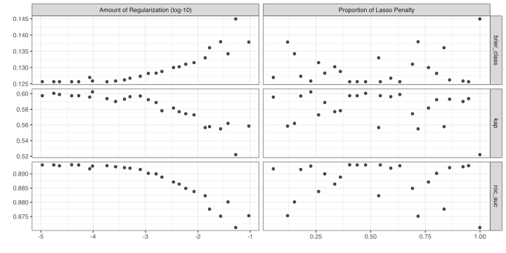
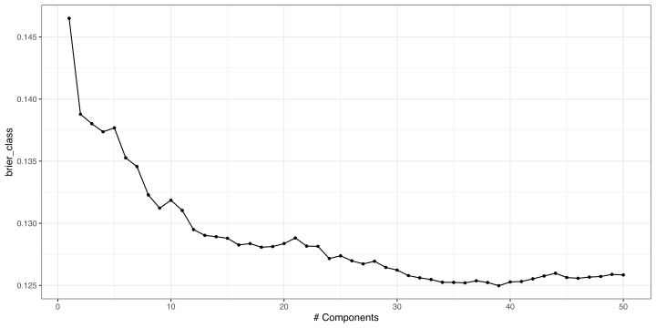

library(tidymodels)
library(doParallel)
tidymodels_prefer()
theme_set(theme_bw())
options(pillar.advice = FALSE, pillar.min_title_chars = Inf)
cl <- makePSOCKcluster(parallel::detectCores(logical = FALSE))
registerDoParallel(cl)
data(cells, package = "modeldata")
cells$case <- NULL
set.seed(123)
cell_split <- initial_split(cells, prop = 0.8, strata = class)
cell_tr <- training(cell_split)
cell_te <- testing(cell_split)
set.seed(123)
cell_rs <- vfold_cv(cell_tr, v = 10, strata = class)
cls_metrics <- metric_set(brier_class, roc_auc, kap)tidymodels - Tuning Hyperparameters
RaukR 2023 • Advanced R for Bioinformatics
Max Kuhn
19-Jun-2023
Previously…
Tuning parameters
Some model or preprocessing parameters cannot be estimated directly from the data.
Some examples:
- Tree depth in decision trees
- Number of neighbors in a K-nearest neighbor model
Activation function in neural networks?
Sigmoidal functions, ReLu, etc.
Yes, it is a tuning parameter. ✅
Number of PCA components to retain?
Yes, it is a tuning parameter. ✅
Bayesian priors for model parameters?
Hmmmm, probably not. These are based on prior belief. ❌
Is the random seed a tuning parameter?
Nope. It is not. ❌
Optimize tuning parameters
- Try different values and measure their performance.
- Find good values for these parameters.
- Once the value(s) of the parameter(s) are determined, a model can be finalized by fitting the model to the entire training set.
Optimize tuning parameters
The main two strategies for optimization are:
Choosing tuning parameters
Grid search
Parameters
The tidymodels framework provides pre-defined information on tuning parameters (such as their type, range, transformations, etc).
The
extract_parameter_set_dials()function extracts these tuning parameters and the info.
Grids
Create your grid manually or automatically.
The
grid_*()functions can make a grid.
Create a grid
A parameter set can be updated (e.g. to change the ranges).
Create a grid
set.seed(99)
glmn_grid <-
glmn_wflow %>%
extract_parameter_set_dials() %>%
grid_latin_hypercube(size = 25)
glmn_grid
#> # A tibble: 25 × 2
#> penalty mixture
#> <dbl> <dbl>
#> 1 0.00000000644 0.544
#> 2 0.000404 0.336
#> 3 0.000832 0.691
#> 4 0.0000000293 0.226
#> 5 0.0114 0.836
#> 6 0.855 0.120
#> 7 0.00705 0.537
#> 8 0.0000604 0.362
#> 9 0.0000000216 0.0548
#> 10 0.0000320 0.290
#> # ℹ 15 more rows- A space-filling design like this tends to perform better than random grids.
- Space-filling designs are also usually more efficient than regular grids.
Create a grid
set.seed(99)
glmn_grid <-
glmn_wflow %>%
extract_parameter_set_dials() %>%
grid_regular(levels = c(4, 4))
glmn_grid
#> # A tibble: 16 × 2
#> penalty mixture
#> <dbl> <dbl>
#> 1 0.0000000001 0.05
#> 2 0.000000215 0.05
#> 3 0.000464 0.05
#> 4 1 0.05
#> 5 0.0000000001 0.367
#> 6 0.000000215 0.367
#> 7 0.000464 0.367
#> 8 1 0.367
#> 9 0.0000000001 0.683
#> 10 0.000000215 0.683
#> 11 0.000464 0.683
#> 12 1 0.683
#> 13 0.0000000001 1
#> 14 0.000000215 1
#> 15 0.000464 1
#> 16 1 1Update parameter ranges
set.seed(99)
glmn_grid <-
glmn_wflow %>%
extract_parameter_set_dials() %>%
update(penalty = penalty(c(-5, -1))) %>%
grid_latin_hypercube(size = 25)
glmn_grid
#> # A tibble: 25 × 2
#> penalty mixture
#> <dbl> <dbl>
#> 1 0.0000529 0.544
#> 2 0.00439 0.336
#> 3 0.00586 0.691
#> 4 0.0000970 0.226
#> 5 0.0167 0.836
#> 6 0.0939 0.120
#> 7 0.0138 0.537
#> 8 0.00205 0.362
#> 9 0.0000858 0.0548
#> 10 0.00159 0.290
#> # ℹ 15 more rowsThe results
Use the tune_*() functions to tune models
glmnet grid search
glmnet grid search
glmn_res
#> # Tuning results
#> # 10-fold cross-validation using stratification
#> # A tibble: 10 × 5
#> splits id .metrics .notes .predictions
#> <list> <chr> <list> <list> <list>
#> 1 <split [1453/162]> Fold01 <tibble [75 × 6]> <tibble [0 × 3]> <tibble>
#> 2 <split [1453/162]> Fold02 <tibble [75 × 6]> <tibble [0 × 3]> <tibble>
#> 3 <split [1453/162]> Fold03 <tibble [75 × 6]> <tibble [0 × 3]> <tibble>
#> 4 <split [1453/162]> Fold04 <tibble [75 × 6]> <tibble [0 × 3]> <tibble>
#> 5 <split [1453/162]> Fold05 <tibble [75 × 6]> <tibble [0 × 3]> <tibble>
#> 6 <split [1454/161]> Fold06 <tibble [75 × 6]> <tibble [0 × 3]> <tibble>
#> 7 <split [1454/161]> Fold07 <tibble [75 × 6]> <tibble [0 × 3]> <tibble>
#> 8 <split [1454/161]> Fold08 <tibble [75 × 6]> <tibble [0 × 3]> <tibble>
#> 9 <split [1454/161]> Fold09 <tibble [75 × 6]> <tibble [0 × 3]> <tibble>
#> 10 <split [1454/161]> Fold10 <tibble [75 × 6]> <tibble [0 × 3]> <tibble>Grid results
Tuning results
collect_metrics(glmn_res)
#> # A tibble: 75 × 8
#> penalty mixture .metric .estimator mean n std_err .config
#> <dbl> <dbl> <chr> <chr> <dbl> <int> <dbl> <chr>
#> 1 0.0000858 0.0548 brier_class binary 0.127 10 0.00310 Preprocessor1_M…
#> 2 0.0000858 0.0548 kap binary 0.596 10 0.0137 Preprocessor1_M…
#> 3 0.0000858 0.0548 roc_auc binary 0.892 10 0.00533 Preprocessor1_M…
#> 4 0.0939 0.120 brier_class binary 0.138 10 0.00322 Preprocessor1_M…
#> 5 0.0939 0.120 kap binary 0.559 10 0.0157 Preprocessor1_M…
#> 6 0.0939 0.120 roc_auc binary 0.875 10 0.00738 Preprocessor1_M…
#> 7 0.0376 0.152 brier_class binary 0.134 10 0.00332 Preprocessor1_M…
#> 8 0.0376 0.152 kap binary 0.562 10 0.0122 Preprocessor1_M…
#> 9 0.0376 0.152 roc_auc binary 0.880 10 0.00697 Preprocessor1_M…
#> 10 0.000793 0.180 brier_class binary 0.127 10 0.00309 Preprocessor1_M…
#> # ℹ 65 more rowsTuning results
collect_metrics(glmn_res, summarize = FALSE)
#> # A tibble: 750 × 7
#> id penalty mixture .metric .estimator .estimate .config
#> <chr> <dbl> <dbl> <chr> <chr> <dbl> <chr>
#> 1 Fold01 0.0000858 0.0548 kap binary 0.517 Preprocessor1_Mode…
#> 2 Fold01 0.0000858 0.0548 brier_class binary 0.143 Preprocessor1_Mode…
#> 3 Fold01 0.0000858 0.0548 roc_auc binary 0.867 Preprocessor1_Mode…
#> 4 Fold02 0.0000858 0.0548 kap binary 0.541 Preprocessor1_Mode…
#> 5 Fold02 0.0000858 0.0548 brier_class binary 0.130 Preprocessor1_Mode…
#> 6 Fold02 0.0000858 0.0548 roc_auc binary 0.892 Preprocessor1_Mode…
#> 7 Fold03 0.0000858 0.0548 kap binary 0.618 Preprocessor1_Mode…
#> 8 Fold03 0.0000858 0.0548 brier_class binary 0.118 Preprocessor1_Mode…
#> 9 Fold03 0.0000858 0.0548 roc_auc binary 0.908 Preprocessor1_Mode…
#> 10 Fold04 0.0000858 0.0548 kap binary 0.621 Preprocessor1_Mode…
#> # ℹ 740 more rowsChoose a parameter combination
show_best(glmn_res, metric = "brier_class")
#> # A tibble: 5 × 8
#> penalty mixture .metric .estimator mean n std_err .config
#> <dbl> <dbl> <chr> <chr> <dbl> <int> <dbl> <chr>
#> 1 0.0000529 0.544 brier_class binary 0.126 10 0.00317 Preprocessor1_Mo…
#> 2 0.000183 0.948 brier_class binary 0.126 10 0.00313 Preprocessor1_Mo…
#> 3 0.0000177 0.477 brier_class binary 0.126 10 0.00317 Preprocessor1_Mo…
#> 4 0.0000388 0.404 brier_class binary 0.126 10 0.00315 Preprocessor1_Mo…
#> 5 0.0000227 0.633 brier_class binary 0.126 10 0.00318 Preprocessor1_Mo…Tuning a recipe
Now let’s fit an “ordinary” logistic regression and tune the number of PLS components.
Let’s update the recipe:
Tuning PLS preprocessing
Tuning PLS preprocessing
Updating our recipe
If we are happy with this model, can can substitute a real value into the workflow (instead of tune()).
The final fit
Suppose that we are happy with our PLS/logistic model.
Let’s fit the model on the training set and verify our performance using the test set.
We’ve shown you fit() and predict() (+ augment()) but there is a shortcut:
# cell_split has train + test info
final_fit <- last_fit(pls_wflow, cell_split, metrics = cls_metrics)
final_fit
#> # Resampling results
#> # Manual resampling
#> # A tibble: 1 × 6
#> splits id .metrics .notes .predictions .workflow
#> <list> <chr> <list> <list> <list> <list>
#> 1 <split [1615/404]> train/test split <tibble> <tibble> <tibble> <workflow>Test set statistics
These are metrics computed with the test set
Test set predictions
collect_predictions(final_fit)
#> # A tibble: 404 × 7
#> id .pred_PS .pred_WS .row .pred_class class .config
#> <chr> <dbl> <dbl> <int> <fct> <fct> <chr>
#> 1 train/test split 0.994 0.00622 1 PS PS Preprocessor1_Mod…
#> 2 train/test split 0.0193 0.981 6 WS WS Preprocessor1_Mod…
#> 3 train/test split 0.0229 0.977 7 WS WS Preprocessor1_Mod…
#> 4 train/test split 0.617 0.383 10 PS WS Preprocessor1_Mod…
#> 5 train/test split 0.0146 0.985 11 WS WS Preprocessor1_Mod…
#> 6 train/test split 0.669 0.331 14 PS PS Preprocessor1_Mod…
#> 7 train/test split 0.0557 0.944 18 WS WS Preprocessor1_Mod…
#> 8 train/test split 0.995 0.00549 24 PS PS Preprocessor1_Mod…
#> 9 train/test split 0.979 0.0207 28 PS PS Preprocessor1_Mod…
#> 10 train/test split 0.981 0.0192 32 PS WS Preprocessor1_Mod…
#> # ℹ 394 more rowsThese are predictions for the test set
What is in final_fit?
extract_workflow(final_fit)
#> ══ Workflow [trained] ══════════════════════════════════════════════════════════
#> Preprocessor: Recipe
#> Model: logistic_reg()
#>
#> ── Preprocessor ────────────────────────────────────────────────────────────────
#> 3 Recipe Steps
#>
#> • step_YeoJohnson()
#> • step_normalize()
#> • step_pls()
#>
#> ── Model ───────────────────────────────────────────────────────────────────────
#>
#> Call: stats::glm(formula = ..y ~ ., family = stats::binomial, data = data)
#>
#> Coefficients:
#> (Intercept) PLS01 PLS02 PLS03 PLS04 PLS05
#> -1.151505 0.629591 0.272728 0.147008 0.142539 0.516826
#> PLS06 PLS07 PLS08 PLS09 PLS10 PLS11
#> -0.235048 -0.154358 -0.344322 0.329816 0.347405 0.446255
#> PLS12 PLS13 PLS14 PLS15 PLS16 PLS17
#> -0.543208 0.061578 0.029988 -0.121318 -0.155766 0.164601
#> PLS18 PLS19 PLS20 PLS21 PLS22 PLS23
#> -0.135477 -0.014923 -0.180127 0.154311 0.432299 -0.070286
#> PLS24 PLS25 PLS26 PLS27 PLS28 PLS29
#> 0.443569 -0.086953 0.295322 -0.279665 0.443832 0.394397
#> PLS30 PLS31 PLS32 PLS33 PLS34 PLS35
#> -0.653353 -0.593635 0.695435 -0.467769 -0.284499 0.348176
#> PLS36 PLS37 PLS38 PLS39
#> 0.000507 -0.141687 0.151696 1.134896
#>
#> Degrees of Freedom: 1614 Total (i.e. Null); 1575 Residual
#> Null Deviance: 2103
#> Residual Deviance: 1171 AIC: 1251Use this for prediction on new data, like for deploying
Next steps
- Create an applicability domain model to help monitor our data over time.
- Use explainers to characterize the model and the predictions.